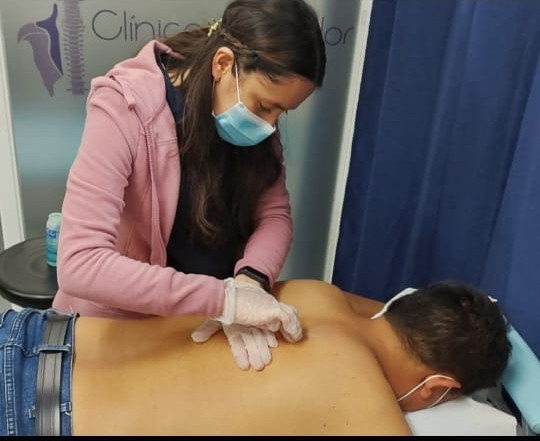
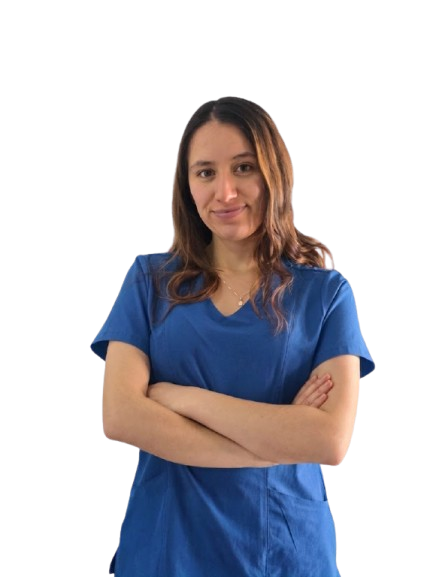

Rehabilitación física
Tratamiento personalizado para lesiones musculoesqueléticas y dolor, orientado a recuperar tu función.
- Manejo del dolor
- Recuperación de fuerza
- Movilidad y función
Rehabilitación física y postoperatoria con Terapia Manual Ortopédica: tratamiento personalizado, atención a domicilio en Bogotá y seguimiento continuo hasta tu alta.

Cada tratamiento parte de una evaluación clínica completa y se adapta a tu condición, tus objetivos y tu ritmo.
Tratamiento personalizado para lesiones musculoesqueléticas y dolor, orientado a recuperar tu función.

Acompañamiento paso a paso tras tu cirugía, con un plan claro para volver a tu vida con seguridad.

Evaluación clínica completa para identificar la causa real de tu condición y diseñar un plan a tu medida.

Soy fisioterapeuta especialista en Terapia Manual Ortopédica. Acompaño a personas que atraviesan un dolor, una lesión o un postoperatorio, con un trato cercano y un método claro: entender la causa, tratarla con técnicas basadas en evidencia y darte herramientas para que vuelvas a moverte con confianza.
Atiendo a domicilio en Bogotá, porque sé que cuando la movilidad está reducida, el tratamiento debe llegar a ti — no al revés.
Un acompañamiento ordenado, etapa por etapa, para que siempre sepas dónde estás y qué sigue.
Analizamos tu condición, tu historia y tus objetivos para entender de dónde partimos.
Identificamos las limitaciones de movimiento y su origen real, no solo el síntoma.
Aplicamos Terapia Manual Ortopédica y ejercicio dirigido, ajustados a tu evolución.
Monitoreamos tu progreso sesión a sesión hasta darte el alta con seguridad.
Experiencias de personas que pasaron por un proceso como el tuyo.
"Llegué con miedo a moverme después de mi cirugía. Hoy subo escaleras sin pensarlo dos veces. El acompañamiento en casa lo cambió todo."
"Años con dolor lumbar y por fin alguien que buscó la causa en lugar de solo tratar el síntoma. El plan fue claro desde el primer día."
"Recuperé la movilidad del hombro más rápido de lo que esperaba. Profesional, puntual y muy humana en cada sesión."
* Testimonios de muestra — se reemplazarán por reseñas reales de pacientes, con su autorización.
Escríbeme por el canal que prefieras y resolvemos tus dudas antes de la primera cita.
Cuéntame tu caso por WhatsApp y coordinamos tu valoración inicial a domicilio. Sin trámites, sin formularios — una conversación directa.
Escribir por WhatsApp